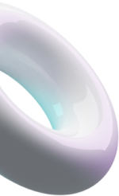
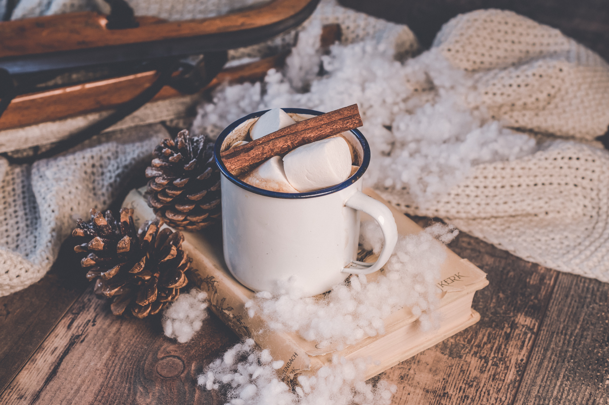
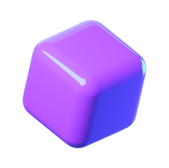
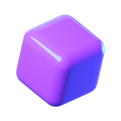
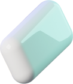
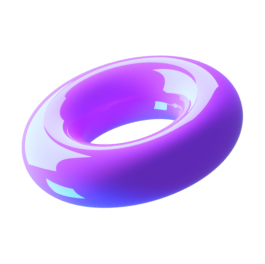

Делайте снимки и записывайте экран
Вместе со Screenshoter можно в один клик сделать снимок или записать происходящее на экране ПК, чтобы поделиться с кем угодно
Встречайте — скриншоты и запись экрана 2 в 1
Больше не нужно искать две отдельные программы для скриншотов и записи экрана. Screenshoter поможет сделать снимок экрана, записать видео и поделиться им с кем угодно. Можно выделить весь экран, определенную область или активное окно
-
Снимок и запись экрана в 1 клик
-
 Моментальная ссылка на файл
Моментальная ссылка на файл -
Удобный редактор снимков
-
 Бесплатно и без регистрации
Бесплатно и без регистрации
-
 
Запись экрана
Недостаточно снимков? Запишите происходящее на экране со своим голосом или звуком системы.
Достаточно нажать две кнопки мыши, выделить необходимую область и начнется запись видео с экрана. Быстро и без сложных настроек
-
В один клик
Не нужно запоминать комбинации клавиш на клавиатуре, чтобы сделать скриншот или начать записывать видео с экрана.
Просто нажмите две кнопки мыши или настройте горячую кнопку на любую удобную клавишу
 

-


Файлы хранятся в течение 1 года с момента создания. Можно их удалять самостоятельно. В истории программы доступны последние 5 скриншотов
Мгновенная ссылка
Мгновенное получение ссылки на снимок или видео. Вы только нажали Enter, а ссылка уже в буфере обмена. Перейдя по ссылке, можно будет посмотреть ваш снимок или записанное видео
-
И редактор снимков
Более 5 инструментов для редактирования. Выделяете область и редактируете.
Если неверно выбрали область — не беда, можно без проблем её передвинуть и/или изменить размер, не удаляя то, что уже нарисовано!
